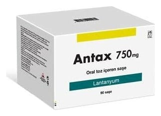

Antax 750 mg Çiğneme Tableti ,90 Çiğneme Tableti

Ne için kullanılır
KT · Bölüm 1ANTAX, kutuda her biri 15 çiğneme tableti içeren 6 adet HDPE şişe içinde (90 adet çiğneme tableti) takdim edilmektedir. ANTAX çiğneme tabletleri, beyaz renkli, yuvarlak, bir yüzü “750” yazılı tabletlerdir.
ANTAX kronik böbrek hastalığı olan yetişkin hastaların kanındaki fosfat seviyesini düşürmek için kullanılır.
Böbrekleri düzgün çalışmayan hastaların kandaki fosfat seviyesi kontrol edilemez. Böylece kandaki fosfat miktarı artar (doktorunuz buna hiperfosfatemi diyebilir).
ANTAX sindirim kanalınızda fosfat ile bağlanarak gıdalardan alınan fosfat emilimini azaltan bir ilaçtır. ANTAX’a bağlanan fosfat bağırsak duvarından emilemez.